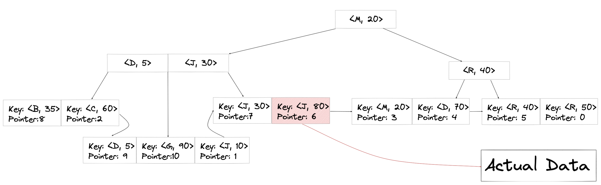

The video belows really dives deep and explains the concept clearly:
1. Start from BST(Binary Search Tree)
Consider how to solve LeetCode 704: Binary Search:
Input: nums = [-1,0,3,5,9,12], target = 9
Output: 4
Explanation: 9 exists in nums and its index is 4
We use divide-and-conquer strategy and that reduces the time complexity of finding an element from O(n) to O(logn).
Here is the code:
class Solution {
public:
int search(vector<int>& nums, int target) {
return helper(nums, 0, nums.size() -1, target);
}
int helper(vector<int>& nums, int low, int high, int target){
if (high < low) return -1;
int mid = (high - low) / 2 + low;
if (nums[mid] == target) return mid;
else if(nums[mid] > target) return helper(nums, low, mid-1, target);
else return helper(nums, mid + 1, high, target);
}
};
2. B Tree
BST is the simplest form of B Tree. Instead of having a single entry for each node, B Tree uses an array of entries for a single node. In general, to be a B Tree tree, the following rules must be met:
- Each non-leaf node must have at least ceil(M/2) children.
- Root can have min 2 children
- All leaf nodes must in the same level
Otherwise, it would be a simple M-way Search tree.
Say we have the following data on disk:
| DiskAdd | User | Bank | Saving |
|---|---|---|---|
| 0 | Ross | Merchant Bank | 50 |
| 1 | Joey | City Bank | 10 |
| 2 | Chandler | Chase Bank | 60 |
| 3 | Monica | Bank of America | 20 |
| 4 | Phoebe | Merchant Bank | 70 |
| 5 | Rachel | City Bank | 40 |
| 6 | Janice | Bank of America | 80 |
| 7 | Judy | Chase Bank | 30 |
| 8 | Bean | Bank of America | 35 |
| 9 | David | City Bank | 5 |
| 10 | Gill | Merchant Bank | 90 |
If we use B Tree, this is what data are organized on disk(index on Saving):（M=3）
Take a look at the B Tree shown above, for each TreeNode, B Tree contains 2 Key Nodes which are sorted in ascending order. For each Key Node, it not only stores the key value, but also stores the reference that points to the actual data on disk.
3. B+ Tree
If the Saving index is constructed using B+ Tree, it is like: （M=3）
There are two kinds of nodes for B+ Tree:
- Index Node: all “non-leaf” nodes. It stores the key for building index.
- Leaf Node: Not only it stores the key, but also stores the reference of the data on disk.
What’s more, all leaf nodes for B+ Tree are connected one by one using linkedList.
3.1. Compare B Tree and B+ Tree
- For B+ Tree, The index nodes only store keys, they don’t store pointers to actual rows. The branching factor of B+ Tree tree is larger than B Tree, so the cost of searching is lower.
- Leaf nodes in the B+ Tree are linked, so we can conduct a full scan with only one pass.
- Performing delete operations in a B+ Tree structure is much easier than that in a B-T.
- The advantage of B Tree is that we can find values that lie close to the root fairly quickly, while in B+ Tree we would need to look all the way down to the leaf nodes for any value.
3.2. How multi-column index represented in B+ Tree?
Suppose we have index on User and Saving. Now we have one Compositive Key (User, Saving), the ordering of the Key is the lexicographic ordering.
The order of the key pair is:
[{B, 35},{C, 60},{D, 5},{J, 10},{G, 90},{J, 30},{J, 80},{M, 20},{P, 70},{R, 40},{R, 50}]
So the B+ Tree is: （M=3）

From this index structure, we can see why condition on (User) AND (User, Saving) would work, but not for (Saving).
4. Reference
[1] https://www.cs.cornell.edu/courses/cs3110/2012sp/recitations/rec25-B-Trees/rec25.html
[2] https://vertabelo.com/blog/all-about-indexes-part-2-mysql-index-structure-and-performance/
[3] https://pdfs.semanticscholar.org/0d7b/8b9172a69fa069c9c38b5f01bd37a498563c.pdf